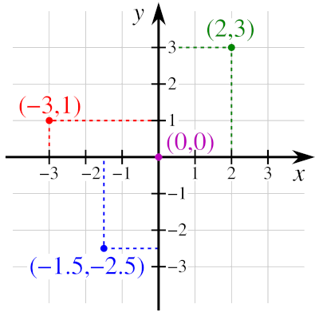

Math Holiday: Existence and uniqueness
Tom Apostol is being higher-math formal when he speaks of existence and uniqueness in the context of the real number system for calculus. But then \(2 + 2\) gives \(4\), right? Why do we need so much theory just to add two numbers and trust that an answer, a unique answer exists? That’s our intuitive human side talking, based on years of assuming things we’ve never had to explain or back up with solid facts. On this math holiday we’ll take a first look at existence and uniqueness explained formally. And in this whirlwind tour we’ll gain more insight into the higher math way of seeing things, uncover strange twists, correct some misconceptions. We continue with our overarching theme, formalize to operationalize, highlighting logical entailment/consequence connections as we go, You’ll see “this is derived from that, this implies that” over and over. Derived from and implies that are the modus operandi of higher math. Set theory is ultimately what’s behind all of this and the bedrock of higher math. We’ll warm up by talking about what a binary operation is in a higher math sense, which fans out into much logical entailment and rabbit-holing. But this will be just a beginner version scraping the surface, leaving a more thorough investigation, again, based in set theory, for later. This is meant to be a math holiday. Try to follow along, mindful that full development of all the themes touched on follows…
Binary operation — the simple definition
What is a binary operation? Let’s start with a short, working definition: A binary operation is any operation performed on two things. That sounds easy enough. The basic operations in arithmetic---addition1 Maybe glance over the Wikipedia article linked to read up on some of the details about addition. , subtraction, multiplication, division—are binary. But wait, in grade school didn’t we add big columns, rows of numbers? Yes and no. Technically speaking, you added two numbers, got an answer, then added the next number to that augend answer—repeating until everything was totalled up.2 Sometimes we speak of the augend as an accumulator held in some form of memory—your brain’s or a computer’s memory. This touches on the recursive nature of math lurking in so many places. We’ll have lots of fun with recursion later. This was done operationally by starting with the ones column, carrying over to the tens column, etc…. This makes addition a good example of theory versus practice typical of computer studies.
1. Addition as a function
Addition has a formal, general definition in higher mathematics. Addition is a function that takes an ordered pair of numbers and maps them to a single result.3 Ordered pair? Addition and multiplication are commutative, i.e., which order your add or multiply doesn’t matter, i.e., input \((a,b)\) gets the same output as \((b,a)\). But obviously order matters with subtraction and division. We’ll get back to why we still insist on ordered pairs at a later point. Hint: You have to start with order to have \((a,b) = (b,a)\) make any sense, no?. But there’s a deeper reason we’ll see later.
- Addition is a binary operation: two inputs housed as an ordered pair.
- Addition is a function: only one unique output.
As mentioned earlier, functions in higher math have a more exacting definition, and, yes, the definition above is steeped in set theory. But for this math holiday we’ll just be set theory tourists…
Let’s look at an example from the programming world, specifically from
the programming language Lisp, that might help us understand addition
as a function. In Lisp addition looks like this: (+ a b) where \(a\)
and \(b\) are addable things like numbers. What you see is a Lisp
list, really nothing more than things, officially called
elements, listed left-to-right inside of parentheses. It couldn’t be
simpler. In Lisp the first element of a list is always considered a
function, while the elements after the function are the function’s
input variables, e.g., the list (func a b) has the function func
taking as input a and b. Again, Lisp programs are just lists and
only lists, hence, the example (+ 2 2) can be considered an entire
Lisp program. So to Lisp + is a function in the higher-math
sense. Now, how could we write (+ a b) as a standard algebra
function? In order to take two input numbers to add, we would need
two independent variables, e.g., \(g(x,y) = x + y\).
What was your first exposure to functions? Most students first
graphed functions, e.g., \(f(x) = x^2\), on a two-dimensional
Cartesian coordinate system plane.4

Cartesian plane (sometimes called Euclidean plane or the xy-plane) with marked points
(signed ordered pairs of coordinates). For any point, the abscissa
is the first value (\(x\) coordinate), and the ordinate is the
second value (\(y\) coordinate). Hence, each pair is \((x,y)\) or \((x,
f(x))\).
We bring this up in order to
contrast a function \(f(x) = y\) graphed on a 2D plane with a binary
function \(g(x,y) = z\). Now, does \(g(x,y) = z\) have dimensionality? Can
we think of any binary operation, \(g(x,y) = z\), in a geometric way
like when we graph \(f(x) = y\)? Hold that thought, we’re coming right
back…
Since we now know a little Lisp, what would this code do, (+ 1 2 3
4)? Yes, it would be just like adding up a column of four numbers
like you did in grade school, and it should give 10
Again, let’s ask what an algebra function for adding this list of numbers would look like. To add up any four numbers let’s try
\begin{align*} h(w,x,y,z) = w + x + y + z \end{align*}Good, but now we’re being held to exactly four independent input variables, i.e., the function \(h\) would only work for adding a four number column. Don’t we really need something more general, more flexible that can take a list, a column of numbers of any size and add them? … But wait, aren’t we at odds with the rule that addition is binary, i.e., that addition can take only two numbers at a time?
If Lisp holds strictly to addition is a binary operation, it would
need a way to add the first two numbers of a longer list, save
(accumulate) that augend, then add the next number, update the
accumulator—doing this over and over until done. However, our Lisp
code, (+ 1 2 3 4), at least on the face of it, doesn’t seem to offer
a way. How is Lisp’s + function even defined internally? Obviously,
if we insist addition is binary we need some way to repeat, cycle,
iterate until we have everything added to give a final answer. Again,
this is what recursion is about, probably the biggest concept in
computing. For our Lisp form,5
A form refers to any valid piece of code (an expression)
that can be evaluated by the language’s evaluator to produce a
result. We’ll get into detail about what an expression is in the math
world later.
(+ 1 2 3 4), consider this
rewrite: (+ (+ (+ 1 2) 3) 4). At least visually, this makes addition
binary again, no? With parentheses we can group addends into
pairs.6
Addition is associative, this basic law allows our
parentheses groupings.
And yes, Lisp parentheses work just like
algebra’s—start with the deepest nesting and work (simplify)
outward. Doesn’t this mean that behind the scenes Lisp’s + function
is doing something just like this heavily-parenthesized version?7
It looks like we started from the left of the list of elements
and worked our way two at a time to the right. But we could have
started from the right and gone left. Perhaps write down how the
parentheses would look computing right-to-left. Could one be better
than the other?
We’ll see how later…
More exists and unique details
Back to Apostol who makes two main points about addition:
- Exists: For every pair \((x, y)\) of numbers being added, \(x + y\), there is an answer, i.e., a result exists…
- Well-defined: …and this guaranteed result is unique, i.e., you will never perform \(x + y\) and get two different answers.
By the way, does \(x + y\) represent, symbolize the answer gotten by adding \(x\) and \(y\), or does \(x + y\) represent a process, an engine, machine, factory that produces an answer? This goes to the heart of symbolism in math. In the previous paragraph we said, “…you will never perform \(x + y\) and get…” Well, in higher math \(a + b\) symbolizes the result. Surprised? Perhaps because \(a + b\) feels like the act of adding–you see it, you calculate it—not the result. But in classical mathematics, the equals sign (\(=\)) represents identity. When we write: \[ 2 + 2 = 4 \] we are not saying the process of adding \(2\) and \(2\) yields \(4\). We are actually saying, the entity \(2 + 2\) is the entity \(4\). So, while \(a + b\) denotes the result, it connotes the structure or process of combining them. Is-ness in math is a big deal.
To demonstrate once again how formalize to operationalize is at play, in a computer language like Lisp the expression \(a + b\) can be symbolized by an abstract syntax tree (AST).8 Perhaps skim the Wiki article. Lots more about AST, a subset of graph theory in the future.
(+)
/ \
(a) (b)
Three aspects:
- The Tree: The symbol \(+\) is the root node, and \(a\) and \(b\) are the leaves … of an upside-down tree, that is.
- The Redex: In Lambda Calculus,9 The so-called Lambda Calculus is the basis of functional programming languages like the Lisp and the ML family. Lots more to come! \(a+b\) is called a redex or a reducible expression (think rewriting). Here an addition form is seen as a potential for calculation.
- The Normal Form: The result (the single number) is the normal form where no more work can be done, i.e., no more reducing.
All right, so if we take a pair of numbers and add them—we get a result, and this result is unique! Again, this seems too obvious to get so theoretical about it. But higher math needs to be exact. And here is once again our most important logical entailment: Uniqueness is tied directly to, come from the binary operation of addition being a function and functions only allowing one unique answer to any given input.
Think back when your teacher said it was “forbidden” to graph a vertical line on a Cartesian plane. Why? Because a vertical line fails the so-called Vertical Line Test.10 Geometrically described, The VLT says, A curve in the xy-plane is the true graph of a function of \(x\) if and only if no vertical line intersects the curve more than once. (See the image in the Preface.) Why? Once again, because we must hold to the rule that plugging in any \(x\) to a function can only result in one, single \(y\). This, once again, is just another way of saying we need a unique answer. Even if we can envision a vertical line, say, at \(x=4\) on the graph, e.g., \((4,y)\), where \(y\) has more than one value, your algebra teacher didn’t allow this. Odd, no? Wait… So we can physically draw a vertical line on the xy-plane—but it’s not supposed to be there?11 Is there any “legal” way to draw a vertical line on a graph? Turns out yes. One way is parametric equations, which you might have seen in pre-calculus or calculus. No, and one common reason given is the slope of a vertical line cannot be ascertained. Remember how slope is “rise over run,” \(\frac{\Delta{y}}{\Delta{x}}\). But with a vertical line we have no “run”, no change of x. We have the undefined situation \(m = \frac{\Delta{y}}{0}\). Again, \(x\) is not moving. Pure logical entailment here…12 In the same spirit, which came first, the rule “a negative times a negative is a positive” or the Distributive Property of binomials? Consider \(7 \cdot 7 = 49\). We could rewrite this as \((9 - 2)(9 - 2) = 49\), no? But then expanding according to the square of differences, \((a-b)^2 = a^2 -2ab + b^2\), we have \(81 - 2(18) + (-2 \cdot -2)\) giving \(45 + (-2 \cdot -2)\). Now, to get \(49\) we must have \((-2 \cdot -2) = 4\). Does this “prove” that a negative times a negative is a positive?
One fun way of seeing why we can’t have a vertical line in the real world is to consider a graph of time versus distance—something moving in time, as is common in so many physics situations. In the diagram below we see that at precisely time equals \(4\) seconds the distance seems to have jumped to many different locations instantaneously in addition to distance equals \(4\) meters, i.e., a quasi-teleportation from science fiction.
Abstracting pairs
Realize, however, that the pair \((a,b)\) we’re talking about with addition should not be confused with a point graphed on a Cartesian coordinate system plane, rather, as an abstract point in an abstract plane. We’ll completely dissect this soon, but let’s continue here by looking at an example in Haskell code that might start to shed some light on this subtle difference
[(ns, cs) | ns <- [1, 2, 3], cs <- ["red", "blue", "green"]]
[(1,"red"),(1,"blue"),(1,"green"),(2,"red"),(2,"blue"),(2,"green"),(3,"red"),(3,"blue"),(3,"green")]
When we “evaluate”13
In math, functions and variable are typically one-letter long,
e.g., \(a, b, c, \ldots x, y, z\) while in programming they can be many
letters, often descriptive. Here we mean ns for numbers and cs
for colors.
this code we get back every possible
combination of the two lists, ns and cs, as pairs.14
This code is a self-contained, one-line Haskell form called a
list comprehension, analogous to a set
comprehension. Lots more Haskell to come.
Now,
does this represent an actual plane? Attempting to see this
geometrically, our Haskell list comprehension produces nine pairs
or, possibly, “points” in this abstract plane where one axis is made
up of just three discrete, separate things, \(1\) and \(2\) and \(3\), and
the other (perpendicular?) axis is, likewise, just three discrete
things, \(\text{red}\) and \(\text{blue}\) and \(\text{green}\). Let’s see
how the Haskell code above would be expressed in mathematical
set-builder notation15
Don’t worry, we’ll go into detail about set theory’s
set-builder notation, another name for set comprehensions,
soon. Just try to read it.
Translating into English, the set
of all possible pairs \((ns,cs)\) such that \(ns\) comes from the set
\(\{1,2,3\}\) and \(cs\) comes from the set \(\{\text{red}, \text{blue},
\text{green}\}\).16
A set is typically housed inside of curly brackets \(\{\; \}\);
the pipe \(\mid\) means “such that”; and \(\in\) is the symbol for
“contained in” or “is an element of,” i.e., \(x \in \mathbb{N}\) means \(x\)
from/in the set of all counting numbers. Haskell duplicates \(\in\)
with <-.
In both versions, Haskell code
and set notation, we can see our pair, our tuple, and indeed it is
[(ns,cs) |... as well as \(\{ (ns, cs) \mid x\ldots\). We also see
Haskell represents sets as lists, only that Haskell lists are
contained in square brackets [ ] and not parentheses like Lisp.
Let’s get back to the issue of comparing your algebra exposure of
plotting functions in the xy-plane to the Haskell code that produces
all possible combinations of the lists [1, 2, 3] and ["red",
"blue", "green"]. How are these two things related? When you studied
algebra, pre-calculus, and calculus, you were always in the realm of
real numbers, \(\mathbb{R}\), whether it was specifically mentioned or
not. And as we’ll see when we formally define numbers, real numbers
can be geometrically represented as a one-dimensional line since real
numbers are so dense, one after the other. This property makes them
essentially continuous with no gaps.17
Imagine a large ball covered in ink rolling on a flat
surface. The ball would effectively produce an unbroken line. Now,
imagine a cog with teeth, the teeth inked and rolling on that flat
surface. This would produce spots or points on the surface as it
rolled along.
,18
Is there a connection between continuous and infinite
vis-a-vis the real numbers? Did a math teacher ever show you why
\(0.999... = 1.0\)? This has to do with completeness. Yes, you need
infinite points to make a line. Yes, you need density, or
seemingly endless points between points. Completeness simply means
that if you are able to seemingly approach a spot arbitrarily
closely, then an actual point must exist there. So getting endlessly
close to \(1.0\) by carrying out \(0.999\ldots\) to huge places is indeed
\(1.0\). Now, why would completeness be necessary when we want to call a
straight, continuous-as-unbroken line an accurate representation of
the real numbers?
Not so with [1, 2, 3] and ["red", "blue", "green"]. These two sets
(here given as Haskell lists) each contain only three discrete,
separate elements, while the set real numbers is endless and
infinite. And another big difference between the list
["red","blue","green"] versus the real number line is there can be
no sense of distance between, say, "red" and "blue". What’s
more, how do we know which comes before the other? However, with a
geometrical real number line, we have both the concept of distance
between two elements, as well as which comes before
which. Establishing the rules of order is a big deal in higher math.
What would happen if we tried to run the Haskell code above to create all possible combinations/pairs of the real numbers with the real numbers? In other words, what if we tried to create an xy-plane by listing out all the pairs of \(x\) and \(y\) making up that plane? It would run endlessly. Why? Because a Cartesian plane is a smooth, continuous surface, and trying to generate the infinite number of points of even the tiniest section of the plane would be impossible. Just like the real number line is smooth and continuous because it is infinite, dense, and complete, so too is the plane envisioned, spanned by two real number lines set perpendicular.
Question: How was Cartesian-Euclidean plane created back when you first encountered them? Typically, they magically appeared when you
- drew a solid, horizontal line geometrically representing the real numbers. It was named the x-axis, then,
- drew another real number line perpendicular to the x-axis and called it the y-axis,
- then you imagined the paper itself as the 2D plane created, spanned by these xy-axes.
Once again, we didn’t actually have to generate all possible combinations of the first set of real numbers and the second set, i.e., all points on the plane—we just imagined it happening… Soon we’ll explain this bit of hand-waving with set theory.
Dipping a toe into set theory after all
Let’s sort out some more of the logical entailment about a vertical line19 …or any curvy, loopy thing failing the VLT… on a graph. As we’ll soon explore more deeply when we deal with spaces and planes in set theory, there are functions (strict) and there are relations (looser). Strangely enough, some pre-calculus texts do enter set theory by talking about the difference between a relation and a function. However, at that level they’re typically hand-waving. Somewhat of an exception is Stitz and Zeager’s (S&Z) Precalculus which states outright
A relation is a set of points in the plane, and a function is a relation restricted to that set of points representing a mapping of some number in the function’s domain to only one number in the range.
One problem in mathematics is reading something like this…and not realizing how much logical consequence is lurking in the words. With such a statement we must read between the lines—quite a bit. So let’s unpack this. First, S&Z are restricting the discussion to the 2D plane. And since this is Pre-calculus, they’re assuming real numbers. Then they describe a function as a more specific, exacting type of relation. So when they say a relation is a set of points in a 2D plane, realize that
- “Points” are represented by pairs of real numbers where…
- …the first number is a place on the x-coordinate axis, the second a place on the y-coordinate axis
…just like when we plotted coordinates when graphing a function. So yes, S&Z are talking higher math, but they’re also keeping things centered in the pre-calculus world of real number functions graphed on the 2D Cartesian coordinate system. Now let’s consider their definition of domain and range
Suppose \(F\) is a relation which describes \(y\) as a function of \(x\), i.e., \(y = f(x)\)
- The set of x-coordinates (the first numbers of the points) is called the domain of \(F\).
- The set of y-coordinates (the second numbers of the points) is called the range of \(F\).
Let’s translate this. First, they’re talking set theory when they base things in terms of sets, but at this point let’s stay beginner-naive and consider a set as just a grouping or list. Next, the relation \(F\) is restricted to being a function, which is also referred to as \(f(x) = y\). But then why call it a relation \(F\)? Because speaking in terms of relations is more higher-math formal and generalized. And so, a function is a narrower type, a subset of a relation. For example, let’s imagine we have in a 2D plane a relation labeled as \(A\), and \(A\) is made up of the points \((5,4)\), \((5,5)\), \((5,6)\), and \((5,7)\). This is a valid relation. Why? Because as the definition of a relation simply states: A relation is a set of points in the plane, and that means literally any grouping of points. But can \(A\) be a function? No, because \(5\) from the x-axis is related to more than one number from the y-axis, i.e., one input is being paired with different outputs.20 Doesn’t this imply that yes, we can have a vertical line on a 2D plane as a relation, just not as a function? But what about, e.g., the relation \(H = \{(4,4), (5,6), (7,10)\}\), where no \(x\) is related to more than one \(y\)?21 Quick aside: Could we consider the relation that is also a function \(H\) to be a piecewise function since it would look like just points on a plane-like backdrop, i.e., not a smooth line or curve? No, because a piecewise function is typically just a stack of separate functions bundled together as one function. (See the Wikipedia article examples.) \(H\), however, has a very limited domain of the set \(\{4,5,7\}\) and range \(\{4,6,10\}\). Like the Haskell example above, we have discrete elements and not continuous like the set \(\mathbb{R}\) of real numbers with infinite elements.
A pair \((a,b)\) is also called a tuple, a more general, abstract concept with lots of logical entailment we’ll soon explore. Order is a central feature of tuples, e.g., \((4,9)\) and \((9,4)\) are two different places on a plane. In the case of a function, a tuple is the result of pairing together, or mapping one set of numbers (from the domain) to another set of numbers (to the range). Yes, \(f(x) = x^2\) is a little factory that makes squares of numbers, and yes, we can graph \(f\) (a concave-up parabola with a vertex of \(0\)); but as described by higher math \(f(x) = x^2\) takes a number from the set of real numbers and maps (connects, joins, points, pairs) it to another number of that same real number set. In this case, one set of real numbers \(\mathbb{R}\) contains both the domain and the range, though we imagine \(\mathbb{R}\) as quasi-duplicated. We’ll talk about this containment below…
A binary operation, on the other hand, such as adding \(2\) and \(3\) together, would have the tuple \((2,3)\) — the first and second numbers coming from the quasi-duplicated set of all real numbers \(\mathbb{R}\) spanning a theoretical plane — with a result \(5\) seemingly on a third real number axis.
But then this representation is also valid, no?
How can it be both? Later, we’ll be able to clear up the ambiguity about how binary operations seem to involve three dimensions, while not really leaving one dimension when we learn about Cartesian products in the context of set theory. Specific to this discussion, we’ll learn how the domain of addition is the abstract space \(\mathbb{R} \times \mathbb{R}\). Yes, a lot was left out when you first learned about graphing functions in Algebra.
As we’ve said, addition in the higher math world is a binary operation that “maps” a tuple, \((a,b)\), with the addition function to another (single!) number. Below is one way higher math symbolizes this
\begin{align} {\large+} : \mathbb{R} \times \mathbb{R} \rightarrow \mathbb{R}, (a,b) \mapsto a + b \end{align}Stare at (1) a bit. Mull over the above wording. The \(\mathbb{R} \times \mathbb{R} \rightarrow \mathbb{R}\) part is just the Cartesian product designation telling us we’re mapping from a Cartesian product space of real numbers (\(\mathbb{R} \times \mathbb{R}\)) back into the real numbers (\(\mathbb{R}\)). Notice the symbol \(\mapsto\) which means “maps to.” This is about emphasizing how the pair \((a,b)\) is transformed into, mapped to the output \(a + b\). Now, how would we depict \(f(x) = x^2\) in this new way?22 Note, variable symbols \(a, b, \ldots x, y\) are interchangeable as long as they’re used consistently. And yes, there’s a formal, higher math way of stating this… Consider
\begin{align} x^y : \mathbb{R} \rightarrow \mathbb{R}, (x) \mapsto x^2 \end{align}This is actually not a binary operation, rather, a unary operation, i.e., a single variable is being mapped to a value. Yes, a Cartesian coordinate system is working with pairs, i.e., each point is \((x,y)\), but in reality the pairs are \((x,f(x))\) since \(y = f(x)\).
Again, we’ll cover all this in depth later. Consider yourself slightly exposed to set theory.
2. The Property of Closure
Existence and uniqueness also involve the higher-math concept of closure. We were just talking about how if \(x\) and \(y\) are real numbers, the unique result \(x + y\) is also a member of the set of real numbers. This seems obvious, no? But it turns out we can’t just assume this.
Closure ensures that when we do math such as addition we never “fall out of” or escape the set of real numbers into some other sort of numbers or places undefined. In higher-math talk we would say, The binary operation of addition is closed in the set of real numbers. Again, it just means when you add real numbers, you get a real number, not some surprise non-real number. This may seem like the worst of hair-splitting yet, but consider \(\mathbb{N}\), the “natural” counting numbers \(1, 2, 3, 4, \ldots\) Now, we cannot say there is a closure on the binary operation of subtraction, since, e.g., \(3 - 4\) gives us a negative number, i.e., outside the counting numbers, which are always positive.23 We will explore the different types of numbers (natural, integer, rational, real, complex) and not just assume real numbers as does high school algebra and calculus.
Comparison with Other Operations
To see why uniqueness matters, consider operations that don’t always have this property in other contexts:
| Operation | Unique in \(\mathbb{R}\)? | Reason |
| Addition (\(x + y\)) | Yes | Field Axiom 1 |
| Multiplication (\(xy\)) | Yes | Field Axiom 1 |
| Square Root (\(\sqrt{x}\)) | No | \(x^2 = 4\) has two solutions: \(2\) and \(-2\). |
| Division (\(x / y\)) | Mostly | Unique except when \(y = 0\) (undefined). |
Yes, the square root highlights how uniqueness must be nailed down—and it’s a common mistake to forget that taking a square root will produce both a negative and positive possible roots. But then we’re prejudiced toward the principle root, i.e., the positive root, e.g., \(\surd 9 = 3\), while \(\sqrt{9} = \pm3\).24 There is a great example of why we should not be mathematically prejudiced toward positive roots behind the story of how we discovered antimatter. See The Man Who Accidentally Discovered Antimatter.
3. Why bother stating such obvious things?
Because it sets the stage for proving more important things later. Higher math attacks our hazy, prejudiced, inexact assumptions with rigor. For example, without the guarantee of uniqueness:
- Substitution would fail: If \(x + y\) could be two different things, you couldn’t reliably replace \(x + y\) with a single value in an equation.
- Equivalence would break: We couldn’t say \(a = b \implies a + c = b + c\) with absolute certainty.
Remember we said equals, \(=\), is more about identity than yields.
We’ve scratched a lot of surface here, played the tourist on holiday, had some loose conversations with the local denizens, sampled a lot of odd, new math cuisine. We touched on how relations are more general, and, thus, forgiving than functions. So why not represent phenomena as just relations? Later when we really dive into relations, but for now we’ll say relations are just too loose. Modern science is built on Calculus, and Calculus is the study of how things change. To define a rate of change (a derivative), you need a clear “before” and “after.” If you look at a curve that loops back on itself as a relation, and you pick an \(x\) where the curve has two points (two \(y\)’s), the concept of “slope” becomes ambiguous. Which point are we talking about? Which direction is “forward”? By restricting ourselves to functions, we ensure that for every input, there is a single, unambiguous value, slope, and area. This allows us to build the machinery of differentiation and integration without constantly hitting logical forks in the road.
Also later we’ll tackle one the most basic laws in mathematics, namely Peano’s Axioms25 Imagine you meet seemingly advanced aliens who just landed in a fancy space ship. You start communications by writing numbers on a board, \(1,2,3,\ldots\), and they eventually understand, but smirk and act dismissive. Confused, you ask them to explain how they do simple numbers, “So tell us how you would represent \(3\).” They write on the board \(3 = S(S(S(0)))\). They explain that \(S\) is a successor function that gives you “the next number,” starting with \(S(0) = 1\) … the aliens are using Peano’s numbering and recursion. Yes, soon… and how everything builds up from that. As we keep saying, this is all about logical entailment, which is invariably what needs minding. Mathematics has explained in ironclad detail exactly why, e.g., addition works — addition is a logical consequence of how sets interact. Another fancy way to say this is, addition is an artefact of set interaction, which is definitely more mysterious. For example, Grok says: Addition is the canonical binary operation satisfying the group axioms on the set.26 Canonical has a consequential high math meaning as well… Yes, this is a long way from just doing arithmetic in grade school with pencil and paper. As a Gendankenexperiment or thought experiment, use this prompt to ask an AI chatbot:
Einstein supposedly said “Gravity is an artefact of space-time geometry.” Can you explain this?
When we get more familiar with abstraction, we’ll understand better why math formalism meshes so well with computer operationalization.